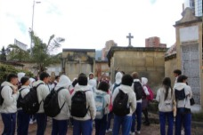
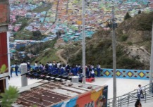
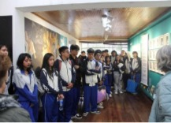
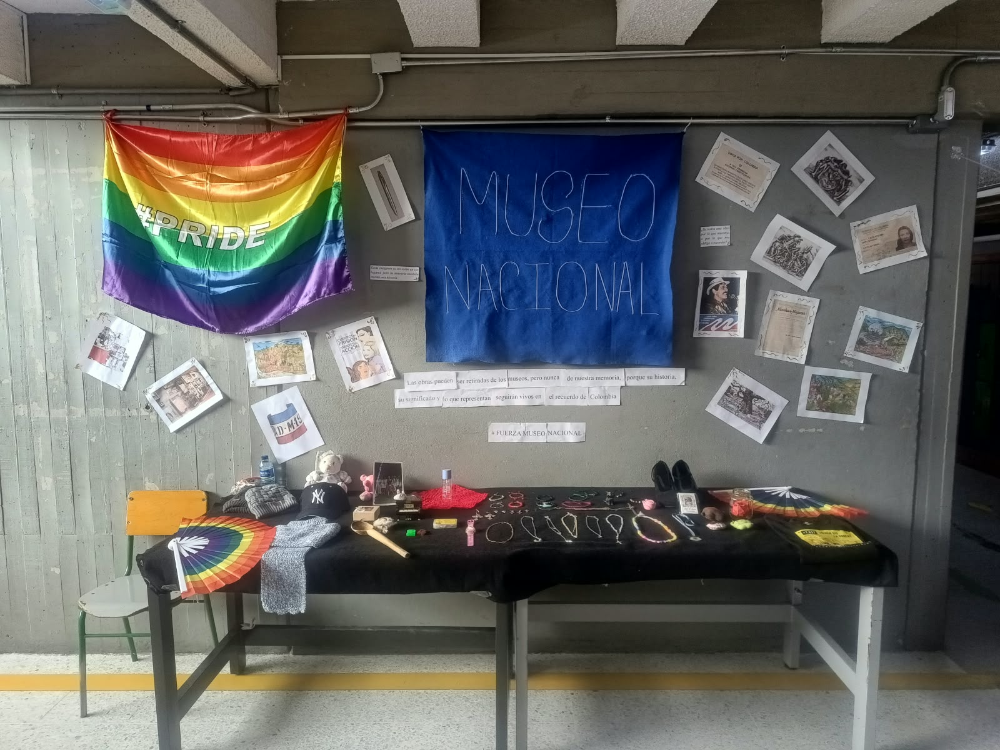
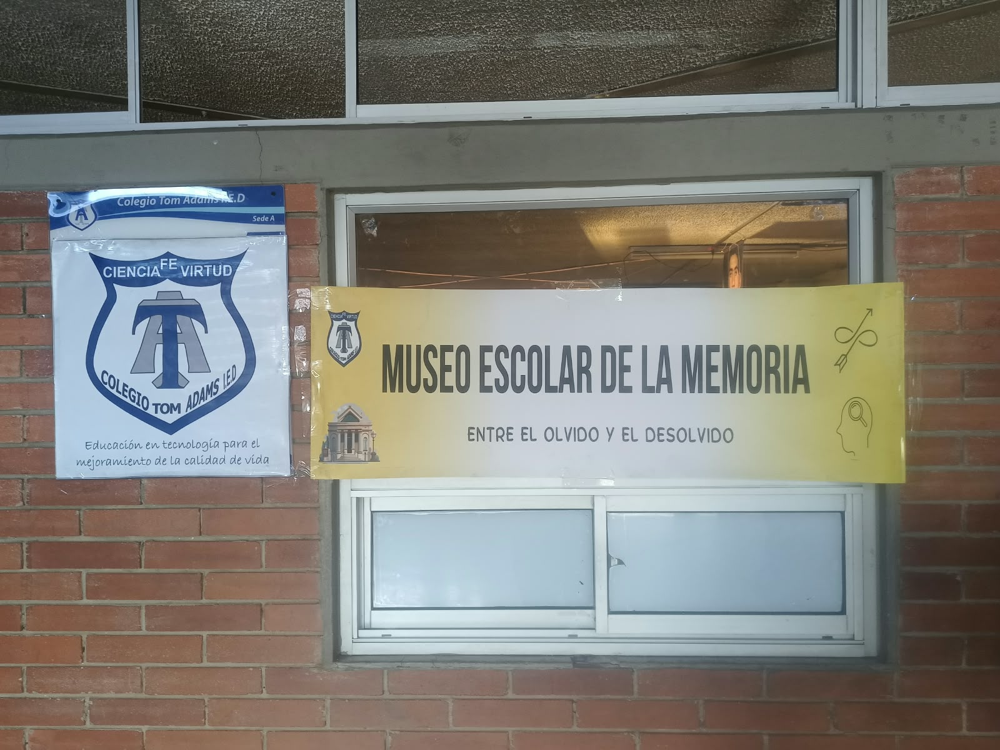
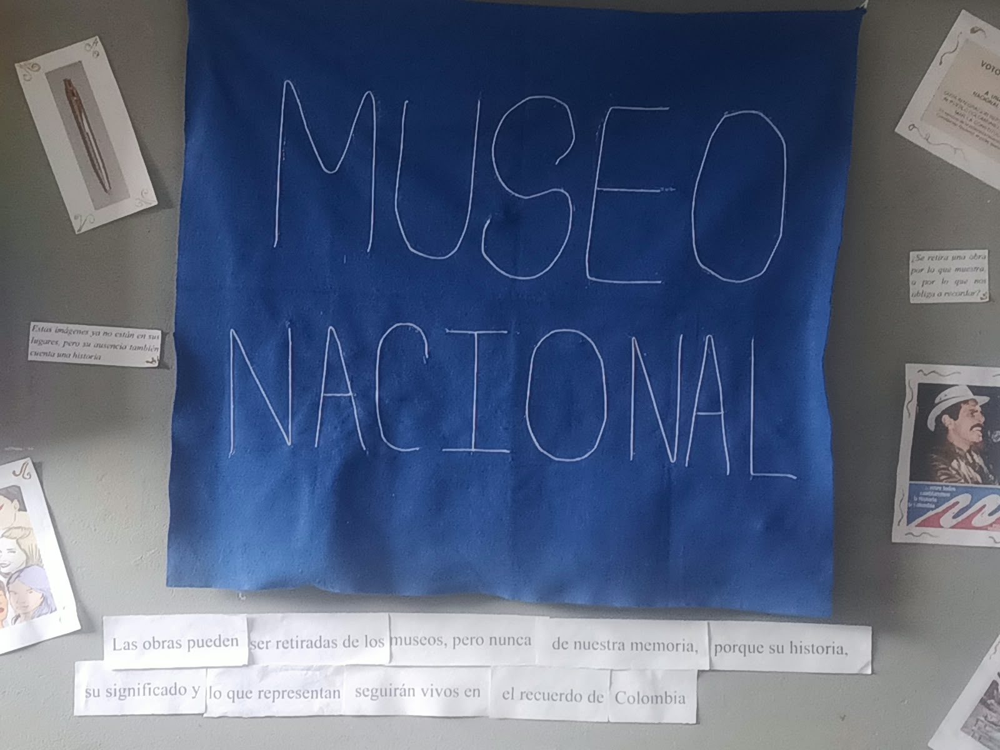
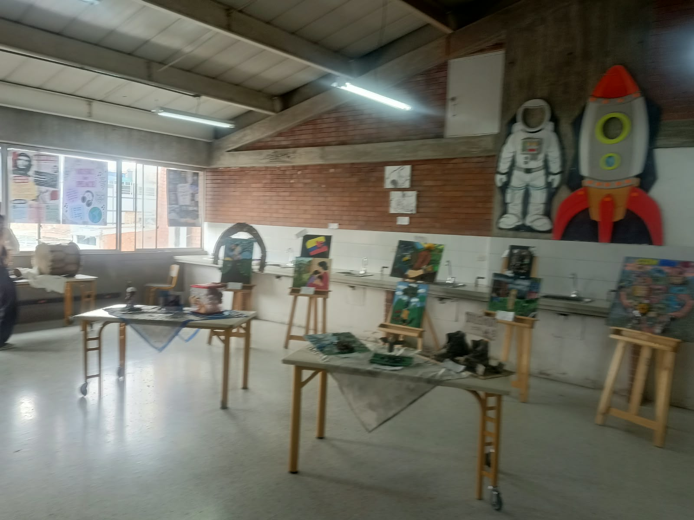
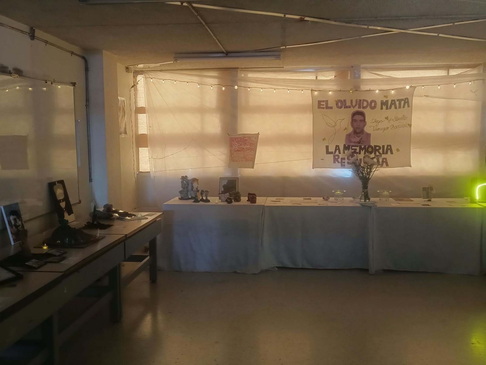
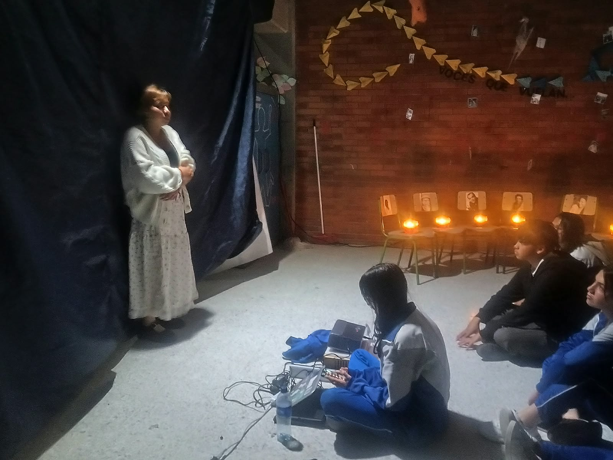

Portal Institucional y Salas Virtuales Inmersivas dedicadas a la preservación de la memoria histórica y la convivencia escolar.
Es una iniciativa pedagógica del Colegio Tom Adams IED para divulgar y gestionar la construcción de memoria histórica, convivencia y paz a través de expresiones artísticas, salidas pedagógicas y tecnologías inmersivas.
La experiencia nació a finales de 2021 en el Colegio Tom Adams IED, en la localidad de Kennedy, para ofrecer a los estudiantes de grado décimo y undécimo un espacio de reflexión que fortalezca el pensamiento crítico y las competencias ciudadanas frente al análisis y la comprensión del conflicto armado en Colombia.
Se inspira en el Kintsugi, la técnica japonesa que repara piezas de cerámica rotas resaltando sus grietas en lugar de esconderlas. Esa idea se convirtió en la metáfora del Museo Escolar de la Memoria, donde los estudiantes muestran sus lecturas e interpretaciones del conflicto y el arte se usa para restaurar la memoria individual, colectiva e histórica.
Gracias al éxito de la primera versión del Museo, en 2022 el proyecto fue reconocido institucionalmente y convirtió las clases de Ética y Valores Humanos en espacios formativos de Cátedra de Paz. Su objetivo general es desarrollar iniciativas escolares que construyan paz mediante procesos de memoria, dentro del currículo, la enseñanza-aprendizaje y el proyecto de vida de los estudiantes.
Además busca crear espacios de formación que vean la ciudad como aula, con salidas pedagógicas a lugares de memoria en Bogotá; fortalecer la Cátedra de la Paz en el área de Ética y Valores Humanos; consolidar el Museo Escolar de la Memoria como espacio de diálogo y reflexión; invitar a líderes sociales, políticos y sindicales para generar un diálogo de saberes; y escuchar las voces de la comunidad educativa para formular nuevas estrategias de análisis y discusión.
Elige una de las salas virtuales disponibles para explorar las exposiciones inmersivas en 3D:
Exposición central dedicada a los años anteriores y monumentos históricos.
Ingresar al MuseoSala 1 con obras interactivas y la pieza especial del museo nacional.
Ingresar a Parte 1Sala 2 de continuidad con colecciones de obras patrimoniales.
Ingresar a Parte 2Hasta ahora se han realizado cinco versiones presenciales del Museo Escolar de la Memoria, bajo el lema «Arte y Memoria»: septiembre de 2021, octubre de 2022, octubre de 2023, octubre de 2024 y noviembre de 2025. La sexta emisión se programó para finales de octubre de 2026, con la que se espera reafirmar el arte como herramienta pedagógica para restaurar la memoria y construir paz en y desde la escuela.
Entre 2022 y 2026 los estudiantes han recorrido lugares de memoria de Bogotá para que la ciudad sea su aula: el CMPR en el Centro Histórico, la Casa de la Memoria de Suba, la Cervecería La Roja – Casa de la Paz (con firmantes del Acuerdo de Paz), el Museo de la Ciudad Autoconstruida en Ciudad Bolívar, el Eje de la Memoria del CNMH y la Casa de Memoria MAFAPO. También han vivido un encuentro intergeneracional con olla comunitaria y un reconocimiento del entorno escolar.

Visitas pedagógicas guiadas al Eje de la Memoria, Paz y Reconciliación.

Recorridos territoriales comunitarios en la localidad de Ciudad Bolívar.

Encuentros de memoria viva y diálogo directo con la organización MAFAPO.
Cada año el colegio vive estas fechas como jornadas de memoria dentro de la Cátedra de Paz. El 12 de febrero, Día de las Manos Rojas, se rechaza el reclutamiento de niños, niñas y jóvenes en la guerra. El 9 de abril se rinde homenaje a las víctimas del conflicto armado con actividades de reflexión y solidaridad. El 25 de mayo, con Memorias Corporales, los estudiantes usan el cuerpo y el arte para expresar la memoria. El 31 de agosto se dedica a jornadas de no violencia y a recordar a las personas desaparecidas.
Estas conmemoraciones conectan lo que se aprende en clase con la comunidad: los estudiantes preparan muestras, intervenciones y conversatorios, y comparten con sus compañeros y familias lo que han investigado sobre el conflicto armado colombiano.
Presentaciones teatrales, monólogos reflexivos, muestras artísticas con la Batucada Estudiantil y las jornadas institucionales "Museo de la Memoria a la Calle".
Al museo han llegado visitas y actividades como una presentación de monólogo, Jesús Abad Colorado, un testimonio de una persona desmovilizada de las FARC-EP, la certificación ECO de la SED, el Primer Encuentro Internacional de Justicia Escolar Restaurativa (JER), un conversatorio con MAFAPO, la exposición de fotografía forense y la visita de la Unidad de Búsqueda de Personas dadas por Desaparecidas.
La comunidad también ha salido del colegio con el primer y el segundo Museo de la Memoria a la Calle, los Encuentros Comunitarios de Entornos Escolares Inspiradores (SED) y el Festival de Arte de Kennedy. Con el Museo Nacional de Colombia ha participado en la formación in situ, en Bordado y Memoria con ASOMUJER y en la formación de Curaduría y Restauración, además del Conversatorio Memorias Afro.
Premio categoría "El colegio, la Comunidad y la Ciudad" con incentivo de $3.800.000.
Apoyo a Semilleros de Paz por $7.600.000 para desarrollo tecnológico y comunitario.
Reconocimiento Categoría 5 "Aliados por un entorno inspirador".
Reconocimiento como Lugar de Memoria en Colombia (Museo Virtual), integrante de la Red Nacional de Colegios con Museos Escolares de Memoria y con Registro Especial de Archivos de DDHH y Memoria Histórica.
Entrevista en City Tv (22 de marzo de 2024), participación en el evento «Incitar para la Paz» de la SED y entrevistas en la emisora Javeriana Estéreo (2025-2026).
Diplomado en Memoria y Verdad del CNMH (2024) y Diplomado en Sistematización de Experiencias de Educación para la Paz (2026), del Instituto Colombo Alemán para la Paz, la Universidad Pedagógica Nacional y el Colectivo Montes de María.
Trabajo articulado con el Centro Nacional de Memoria Histórica (CNMH), Escuela Tecnológica Instituto Técnico Central (ETITC), Museo Nacional de Colombia, Universidad Javeriana y Secretaría de Educación del Distrito (SED).
Con la ETITC, entre 2024 y 2026, se desarrollaron un objeto de memoria, esta página web, el Museo Virtual de la Memoria y espacios de formación entre pares. Con el Museo Nacional de Colombia se han realizado procesos de formación en curaduría y restauración y encuentros como Bordado y Memoria con ASOMUJER.
Registro de exposiciones artísticas en cómic, puestas en escena teatrales y episodios radiales tipo podcast desarrollados por la comunidad escolar.

Obras y piezas exhibidas en una sala del Museo Escolar de la Memoria.

Cartel del Museo Escolar de la Memoria del Colegio Tom Adams IED.

Cartel del Museo Nacional de Colombia, aliado del proyecto en procesos de formación.

Recorrido por una sala con las obras montadas para la muestra.

Mesa con piezas y objetos de memoria dispuestos para la exposición.

Presentación teatral durante un evento del museo.
Accede al panel interactivo para registrar obras, eventos, actividades y evidencias directamente en Supabase.